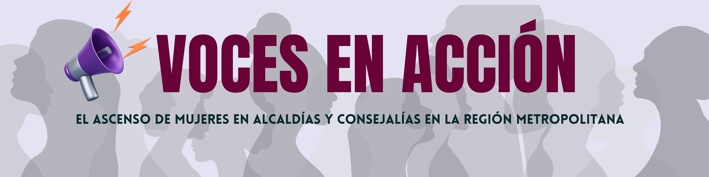

¡Bienvenido/a! Te invitamos a conocer la siguiente historia...

A nivel mundial, de los 6 millones de representantes electos en órganos de gobiernos locales, solo 2 millones (36%), son mujeres. Aunque aún hay desafíos sustanciales, hay notables mujeres que superaron las barreras estructurales y brechas de género. Según datos del Observatorio de Igualdad de Género de la CEPAL, Chile es el cuarto país en Latinoamérica con mayor cantidad de mujeres en cargos de representación política local. Aquí te contamos la historia de algunas de ellas.
Municipalidad de Santiago
En las elecciones municipales de 2021, Hassler logró una victoria significativa, convirtiéndose en la primera mujer comunista en alcanzar el cargo de alcaldesa de Santiago y la segunda mujer en general, después de Carolina Tohá. Su trascendencia se magnifica al considerar que fue la única mujer candidata entre cinco contendientes, resaltando aún más su impacto en el ámbito político chileno. Irací Hassler se erige así como una figura prominente, representando la voz femenina en el panorama político chileno.
Hassler, nacida el 6 de noviembre de 1990 en Santiago, Chile, emerge como una figura destacada en la escena política del país. Su incursión en la política se consolidó en 2011 al unirse a las Juventudes Comunistas de Chile, donde participó activamente en las protestas estudiantiles del mismo año. En 2013, fue elegida secretaria general de la Federación de Estudiantes de la Universidad de Chile. Su salto a la arena municipal ocurrió en 2016, cuando fue electa concejala por la comuna de Santiago. Sin embargo, fue en diciembre de 2020 cuando ganó las primarias de la oposición, preparando el terreno para su candidatura a alcaldesa.
Alcaldes electos en la Región Metropolitana
Las comunas presentadas en la gráfica son encabezadas por alcaldesas. Además, la elección de estas comunas se debe a que estas presentan un fenómeno, que se verá más abajo, donde las mujeres superaron el número de hombres electos para el cargo de concejales.
Desde el 2012, la cantidad de alcaldesas en la Región Metropolitana se duplicó. Selecciona una comuna y conoce a su alcaldesa electa en la última elección en el 2021.
Reelecciones
En medio del panorama político que delinea la Región Metropolitana, emergen dos destacadas figuras que desafían la norma establecida. Carolina Leitao, al mando de Peñalolén desde 2016, y Claudia Pizarro, líder en La Pintana, han demostrado su excepcional capacidad de liderazgo al ser reelectas en sus respectivos cargos. Carolina Leitao, alcaldesa desde 2016, ha consolidado su presencia en Peñalolén, destacando por su liderazgo continuo y su conexión con la comunidad. Por otro lado, Claudia Pizarro ha desafiado las convenciones al ser reelegida en La Pintana, consolidándose como una figura influyente en la administración local. Conoce un poco de sus historias
Concejalas: emparejando el terreno
Entre las elecciones de 2016 y 2021, las mujeres lograron aumentar su elección en un 150% en la Región Metropolitana. Según datos entregados por el Servel, en las últimas elecciones de concejales, se postularon 1.835 hombres y 1.356 mujeres al cargo. De estos, fueron electos 201 hombres y 205 mujeres.
Futuro de las mujeres en cargos comunales en Chile
Según la ONU, las mujeres se enfrentan a dos tipos de obstáculos a la hora de participar en la vida política. Las barreras estructurales creadas por leyes e instituciones discriminatorias siguen limitando las opciones que tienen las mujeres para votar o presentarse a elecciones. Las brechas relativas a las capacidades implican que las mujeres tienen menor probabilidad que los hombres de contar con la educación, los contactos y los recursos necesarios para convertirse en líderes eficaces.